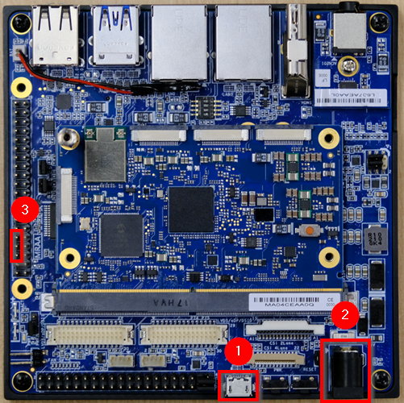
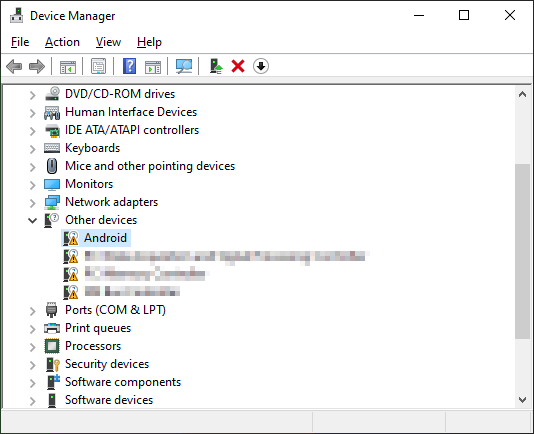
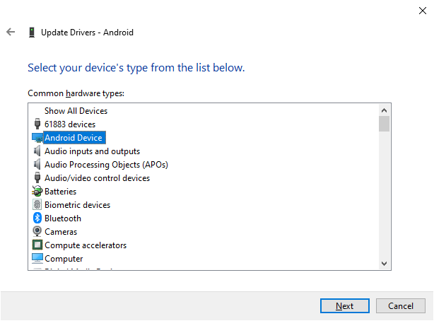
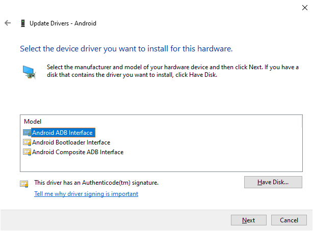
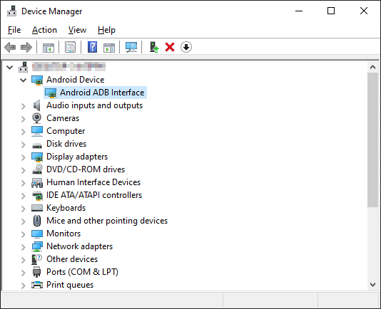

Flashing Ubuntu using ADBThis document provides detailed instructions on how to flash the image to the UFS of the I-Pi SMARC RB5 using ADB on Windows. PrerequisitesPlease make sure the following drivers are installed on the host device. Android USB Driver ADB Fastboot Tool Please contact ipi.wiki@adlinktech.com for the image. Board layout  USB OTG connector Power jack UART Pins (See How to Read Console Output) Windows HostEnabling fastboot mode Note: These steps are only necessary if an image has previously been flashed to the UFS. New devices or devices that have had their images erased will start in fastboot mode by default. Make sure the device is fully powered off, with the power and USB OTG cable not connected. Power on the device by plugging in the power cable Connect the USB OTG cable from your host device to the target device. To get started, open a command prompt and type the following command: adb devices -l Your target device should be listed in the output. To start the device in fastboot mode, run the following commands: adb rootadb reboot bootloader The target device will be rebooted. You can see the serial logs in the PuTTY terminal if you have connected the UART cable. When this is finished, the device should be in fastboot mode and be ready to be flashed. Flashing the image Note: This step requires the device to be in fastboot mode. Verify whether the device is successfully connected using the following command: fastboot devices If the device is not detected, please follow the troubleshooting steps. In your command prompt, navigate to the directory of the image you want to flash. The image files are part of the “HLOS”, you can choose between FHD and 4K Flash the image using the following commands: fastboot flash abl_a abl.elffastboot flash abl_b abl.elffastboot flash system qti-ubuntu-robotics-image-qrb5165-rb5-sysfs.ext4fastboot flash boot_a qti-ubuntu-robotics-image-qrb5165-rb5-boot.imgfastboot flash boot_b qti-ubuntu-robotics-image-qrb5165-rb5-boot.img Reboot the device fastboot reboot The device is now ready to be used. Erasing the image Note: This step requires the device to be in fastboot mode. Erase the image using the following commands: fastboot erase systemfastboot erase boot_afastboot erase boot_bfastboot reboot Reboot the device fastboot reboot The image should reboot into fastboot mode and be ready to be flashed again. TroubleshootingDevice does not appearIf your device does not appear when running fastboot devices, it is likely that your computer does not automatically use the right drivers for your device. Check the Windows Device manager to see if the “Android” device is detected under “Other devices”.  Right click the device and select “Update Driver” Select “Browse my computer for drivers”, then “Let me pick from a list of available drivers on my computer” Pick the “Android device” type, then choose the “Android ADB Interface”. Press “Yes” when prompted with the warning.   Your device should now show as an “Android ADB Interface” in the device manager. Run fastboot devices again to verify that the device now appears. 